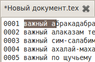
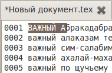
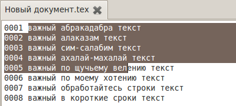
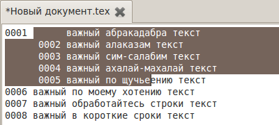
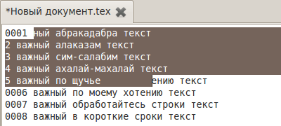
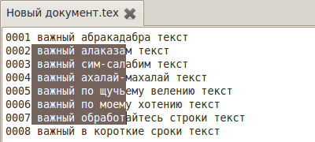
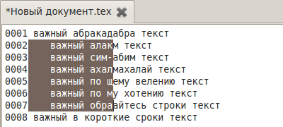
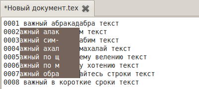
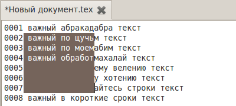
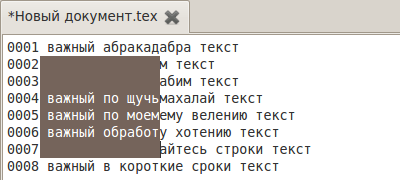

[Назад: 3.1. Основной документ и закладки]
Прочее
Помимо основных действий, доступных в меню или на панели инструментов, в TeX Creator имеются также некоторые
"скрытые" возможности. Для их использования нужно задействовать определенные сочетания клавиш.
Например, переключаться между вкладками можно не только с помощью мыши, но и нажимая Ctrl+Tab.
Работа с выделением в стандартном режиме
Смена регистра. Сменить регистр букв (заглавные или строчные) выделенного текста можно, нажимая соответственно
Alt+Стрелка вверх и Alt+Стрелка вниз:


Сдвиг влево или вправо. Выделенный текст можно сдвигать влево или вправо при помощи сочетания клавиш
Alt+Стрелка влево и Alt+Стрелка вправо соответственно.
При этом, если текст достигает конца или начала строки, либо конца или начала выделения, то он урезается в
этом месте:



Работа с выделением в режиме блоков
Сдвиг влево или вправо. Выделенный блок можно сдвигать влево или вправо при помощи сочетания клавиш
Alt+Стрелка влево и Alt+Стрелка вправо соответственно.
При этом, если текст достигает конца или начала выделения, то он урезается в этом месте:



Сдвиг вверх или вниз. Кроме сдвига по горизонтали доступен также вертикальный сдвиг выделенного блока.
Он осуществляется при помощи сочетания клавиш Alt+Стрелка вверх и Alt+Стрелка вниз.
Строки, "уприающиеся" в границу выделения, удаляются:


[Назад: 3.1. Основной документ и закладки]